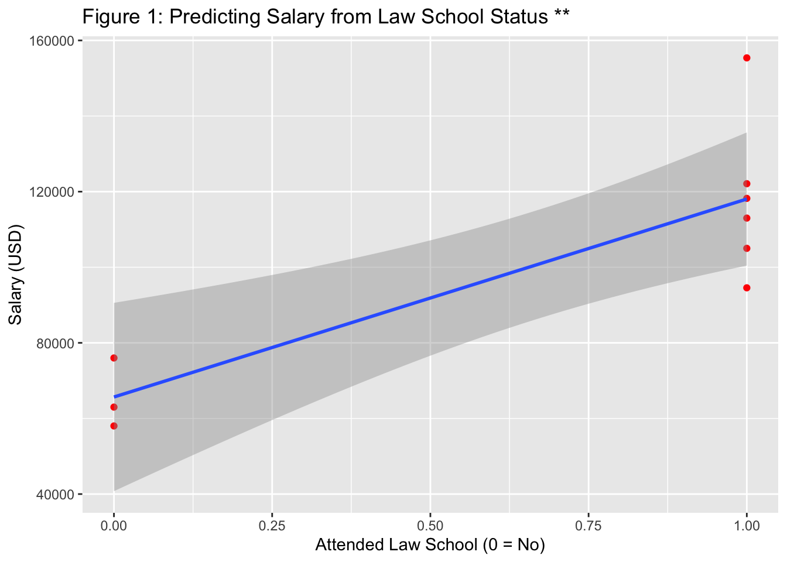

A repository and its corresponding R-project have been created to complete the ‘skeleton’ repository mini-project. Embedded within this R-project, I have decided to make my own questions that I will answer to demonstrate other relevant skills from the objective list. Making and answering these questions will allow me to make further commitments to the repository, allowing for clean and easy comprehension of my code.
Question #1
William is a student at the University of Chicago. William just finished taking three classes during the fall quarter, and needs help calculating and visualizing his GPA. The University of Chicago uses a standard A-grade conversion scale, where an ‘A’ equals a 4.00 GPA. William’s classes and grades are as follows:
Causal Inference: A- Introduction to Python Programming: B From Data to Manuscript in R: B+
Make a data frame with William’s class, grade and quarter information.
Convert William’s letter grades to a numeric GPA using the standard A-grade conversion scale.
Add William’s letter grades as a column to the data frame.
── Attaching core tidyverse packages ──────────────────────── tidyverse 2.0.0 ──
✔ dplyr 1.1.4 ✔ readr 2.1.5
✔ forcats 1.0.0 ✔ stringr 1.5.1
✔ ggplot2 3.5.1 ✔ tibble 3.2.1
✔ lubridate 1.9.4 ✔ tidyr 1.3.1
✔ purrr 1.0.2
── Conflicts ────────────────────────────────────────── tidyverse_conflicts() ──
✖ dplyr::filter() masks stats::filter()
✖ dplyr::lag() masks stats::lag()
ℹ Use the conflicted package (<http://conflicted.r-lib.org/>) to force all conflicts to become errors
## Making the data framewilliam <-data.frame(Class =c("Causal Inference", "Introduction to Python Programming", "From Data to Manuscript in R"), Letter =c("A-", "B", "B+"), Quarter =c("Fall", "Fall", "Fall"))william <- william %>%mutate(Numeric =case_when(Letter =="A"~4.00, Letter =="A-"~3.70, Letter =="B+"~3.30, Letter =="B"~3.00, Letter =="B-"~2.70, Letter =="C+"~2.30, Letter =="C"~2.00, Letter =="C-"~1.70, Letter =="D+"~1.30, Letter =="D"~1.00, Letter =="F"~0.00))## Moving Quarter after Class so it looks better aesthetically.william <- william %>%relocate(Quarter, .after = Class)## Calculating William's GPAwilliam_gpa =mean(william$Numeric)## Rounding GPA to two decimalswilliam_gpa =round(william_gpa, 2)## All of the questions have been answered, and everything looks good. Now I'm going to do some simple checks to make sure the numeric calculations went properly using arithmetic, comparison and logical operators. larger_test = william$Numeric[1] >= william_gpaequal_test = william_gpa|((william$Numeric[1] + william$Numeric[2] + william$Numeric[3]) /3)## Everything was done properly! Going to commit to the skeleton repository, then move to Question #2head(william)
Class Quarter Letter Numeric
1 Causal Inference Fall A- 3.7
2 Introduction to Python Programming Fall B 3.0
3 From Data to Manuscript in R Fall B+ 3.3
print(william_gpa)
[1] 3.33
print(equal_test)
[1] TRUE
Question #2
Write the newly created data frame to a csv.
#| label: question-2## I will convert the table to a csv using the readr package.library(readr)write_csv(william, "Tables/william.csv")## Now this should have saved properly using a relative path in my 'Skeleton' folder.## Calling it now.will_data =read_csv("Tables/william.csv")
Rows: 3 Columns: 4
── Column specification ────────────────────────────────────────────────────────
Delimiter: ","
chr (3): Class, Quarter, Letter
dbl (1): Numeric
ℹ Use `spec()` to retrieve the full column specification for this data.
ℹ Specify the column types or set `show_col_types = FALSE` to quiet this message.
print(will_data)
# A tibble: 3 × 4
Class Quarter Letter Numeric
<chr> <chr> <chr> <dbl>
1 Causal Inference Fall A- 3.7
2 Introduction to Python Programming Fall B 3
3 From Data to Manuscript in R Fall B+ 3.3
Question #3
Ten years after graduation, William is currently unhappy in his job as a bank manager due to his monetary compensation. William believes he can make more money as a lawyer, but is unsure whether he should apply to law school. Some of his friends, Jonathan, Martin, Olivia, Isabella, Daniel, and Paige, are lawyers and graduated from law school. Some of his other friends, Matthew, and Connor, never went to law school and are perfectly happy in their careers. Information about William and his friends are as follows:
William had a 3.33 GPA, scored 167 on the LSAT, and participated in 2 extracurricular activities. He currently makes $63,002 as a bank manager.
Jonathan had a 3.95 GPA, scored 176 on the LSAT, and participated in 5 extracurricular activities. He currently makes $155,387 as a lawyer.
Martin had a 3.63 GPA, scored 170 on the LSAT, and participated in 2 extracurricular activities. He currently makes $122,098 as a lawyer.
Olivia had a 3.99 GPA, scored 179 on the LSAT, and participated in 0 extracurricular activities. She currently makes $113,000 as a lawyer.
Isabella had a 3.54 GPA, scored 168 on the LSAT, and participated in 3 extracurricular activities. She currently makes $105,000 as a lawyer.
Daniel had a 3.77 GPA, score 171 on the LSAT, and participated in 4 extracurricular activities. He currently makes $118,220 as a lawyer.
Paige had a 3.81 GPA, scored 175 on the LSAT, and participated in 2 extracurricular activities. She currently makes $94,562 as a lawyer.
Matthew had a 3.13 GPA, scored 154 on the LSAT, and participated in 3 extracurricular activities. He currently makes $76,000 as a supermarket manager.
Connor had a 3.31 GPA, scored 162 on the LSAT, and participated in 5 extracurricular activities. He currently makes $58,020 as a mortgage analyst.
Make a data frame including each person’s name, GPA, LSAT, extracurricular activity participation, salary and law school status as columns.
Run a regression to determine whether there are any significant predictors of salary.
Plot your desired model and impose a line of best fit.
Write up the results of your regression analysis.
#| label: question-3# install.packages("ggplot2")library(ggplot2)admissions_data <-data.frame(Name =c("William", "Jonathan", "Martin", "Olivia", "Isabella", "Daniel", "Paige", "Matthew", "Connor"), GPA =c(william_gpa, 3.95, 3.63, 3.99, 3.54, 3.77, 3.81, 3.13, 3.31), LSAT =c(167, 176, 170, 179, 168, 171, 175, 154, 162), Extras =c(2, 5, 2, 0, 3, 4, 2, 3, 5), Salary =c(63002, 155387, 122098, 113000, 105000, 118220, 94562, 76000, 58020), School =c(0, 1, 1, 1, 1, 1, 1, 0, 0))write_csv(admissions_data, "Tables/admissions_data.csv")## The data frame has been created with everyone's information. School is coded as a yes/no variable, with 0 meaning the person is not a lawyer, and 1 meaning the person is. ## Now I will run a linear regression to identify significant indicators of salary.## Hypothesis: Law school status, but not the other predictors, will be a significant predictor of salary. ## Code reference: https://www.datacamp.com/tutorial/linear-regression-R lmSalary =lm(Salary ~ GPA + LSAT + Extras + School, data = admissions_data)# summary(lmSalary)## None of my predictors are significant in the full model, nor is the full model itself at p < .05. I will make some modifications to see whether I can uncover some of the variance. lmSalary2 =lm(Salary ~ GPA + LSAT + School, data = admissions_data)# summary(lmSalary2)## Now the model is significant, but none of my predictors are. I will try dropping LSAT score.lmSalary3 =lm(Salary ~ GPA + School, data = admissions_data)# summary(lmSalary3)## To see the final model, I will drop GPA. lmSalary4 =lm(Salary ~ School, data = admissions_data)summary(lmSalary4)
Call:
lm(formula = Salary ~ School, data = admissions_data)
Residuals:
Min 1Q Median 3Q Max
-23482 -7654 -2672 4054 37342
Coefficients:
Estimate Std. Error t value Pr(>|t|)
(Intercept) 65674 10534 6.234 0.000431 ***
School 52370 12902 4.059 0.004814 **
---
Signif. codes: 0 '***' 0.001 '**' 0.01 '*' 0.05 '.' 0.1 ' ' 1
Residual standard error: 18250 on 7 degrees of freedom
Multiple R-squared: 0.7018, Adjusted R-squared: 0.6592
F-statistic: 16.48 on 1 and 7 DF, p-value: 0.004814
## So now we see that attending law school is a significant predictor of earning a higher salary in my hypothetical data set. Time to plot the data!## Plotting## Code reference: https://www.geeksforgeeks.org/add-regression-line-to-ggplot2-plot-in-r/ ggplot(admissions_data, aes(x = School, y = Salary)) +geom_point(color ="red") +stat_smooth(method ="lm", formula = y ~ x, geom ="smooth") +labs(x ="Attended Law School (0 = No)", y ="Salary (USD)", title ="Figure 1: Predicting Salary from Law School Status **")

## Summary statisticssummary(admissions_data$GPA)
Min. 1st Qu. Median Mean 3rd Qu. Max.
3.130 3.330 3.630 3.607 3.810 3.990
summary(admissions_data$LSAT)
Min. 1st Qu. Median Mean 3rd Qu. Max.
154.0 167.0 170.0 169.1 175.0 179.0
summary(admissions_data$Extras)
Min. 1st Qu. Median Mean 3rd Qu. Max.
0.000 2.000 3.000 2.889 4.000 5.000
summary(admissions_data$Salary)
Min. 1st Qu. Median Mean 3rd Qu. Max.
58020 76000 105000 100588 118220 155387
summary(admissions_data$School)
Min. 1st Qu. Median Mean 3rd Qu. Max.
0.0000 0.0000 1.0000 0.6667 1.0000 1.0000
Regression analyses were conducted on current and former University of Chicago students (n = 9) to investigate the effectiveness of predicting salary (M = 100,587, SD = 31,256) using measures of GPA (M = 3.61, SD = 0.30), LSAT score (M = 169.11, SD = 7.66), number of extracurricular activities (M = 2.89, SD = 1.62) and law school attendance (attended = 6, non-attended = 3). The model did not significantly account for variance of salary in the data, R2 = .82, F(4, 4) = 4.46, p = .088. Since neither of GPA, LSAT score, number of extracurricular activities, or law school attendance accounted for significant variance in salary when all compiled in the model, additional analyses were tested measuring the efficacy of each individual predictor. When tested in a singular model, law school attendance accounted for 70% of the variance in salary in the data, R2 = .70, F(1, 7) = 16.48, p < .01.
The estimate of the coefficient for law school attendance was b = 52,370, sb = 12,902, t(7) = 4.06, p = .004. This indicates that going to law school is associated with a $52,370 jump in salary as opposed to not having gone to law school. Based on data from this data set, our main hypothesis is supported in that William would greatly increase his earning potential by attending law school and becoming a lawyer.
Question #4
William has three other friends that are medical doctors. Their information are as follows:
Tyrell had a 3.91 GPA, never took the LSAT, and participated in 5 extracurricular activities. He currently makes $388,267 as a cardiologist.
Savannah had a 3.85 GPA, never took the LSAT, and participated in 4 extracurricular activities. She currently makes $422,001 as an oncologist.
Gerald had a 3.89 GPA, never took the LSAT, and participated in 3 extracurricular activities. He currently makes $543,022 as a dermatologist.
Add William’s doctor friends to the data frame.
Perform an ANOVA to determine whether there are differences in salary between lawyers, doctors, and non-lawyers or non-doctors.
Plot the results.
#| label: question-4## Now I need to modify my data set so it accurately reflects the updated information. ## I will code the new friends as "2" in the School column to reflect their status as attended medical school, and NA in the LSAT column to reflect that they never took the LSAT.admissions_data =tibble(admissions_data)doctor_rows =data.frame(Name =c("Tyrell", "Savannah", "Gerald"), GPA =c(3.91, 3.85, 3.89), LSAT =c(NA, NA, NA), Extras =c(5, 4, 3), Salary =c(388267, 422001, 543022), School =c(2, 2, 2))admissions_data = admissions_data %>%rbind(doctor_rows)## Performing the ANOVA## Hypothesis: There are significant differences between groups on salary.## Code reference: https://www.scribbr.com/statistics/anova-in-r/ and https://stackoverflow.com/questions/31443521/modifying-y-axis-with-ggplot2 anova =aov(Salary ~ School, data = admissions_data)summary(anova)
Df Sum Sq Mean Sq F value Pr(>F)
School 1 2.228e+11 2.228e+11 29.84 0.000276 ***
Residuals 10 7.466e+10 7.466e+09
---
Signif. codes: 0 '***' 0.001 '**' 0.01 '*' 0.05 '.' 0.1 ' ' 1
## There are statistically significant differences between lawyers, doctors, and non-lawyers or non-doctors on salary in this hypothetical data set. ## Plotting the results## Using the scales package because it allows me to change x and y axis ticks quite efficiently.library(scales)
Attaching package: 'scales'
The following object is masked from 'package:purrr':
discard
The following object is masked from 'package:readr':
col_factor
ggplot(admissions_data, aes(x = School, y = Salary)) +geom_point() +labs(x ="School Type (0 = Other, 1 = Law, 2 = Medical)", y ="Salary (USD)", title ="Figure 2: Salary from School Type") +stat_summary(fun.data ='mean_se', geom ='errorbar', width =0.2) +scale_y_continuous(labels=comma) +scale_x_continuous(breaks =unique(admissions_data$School))
Question #5
Use a code chunk and R-Markdown to demonstrate in-line code, lists, and footnotes in Markdown.
#| label: question-5## Making a list that I can read in R Markdown## I'm going to make a simple list that includes my name and my dog's name.mikes_list =list("Michael", "Douglas")## Making a variable with my dog's age (5 years old).dog_age = (5)## Making a new variable about how long I've had my dog.ownership = (dog_age -1)## Making a string variable with my dog's birthplace.birthplace ="Phoenix, Arizona"## Making a list of locations I have lived prior to moving to Chicago.## Technically Edmonton is not totally correct but it's the nearest city, so I will use that here.lived_locations =list("Phoenix", "Minneapolis", "Edmonton")## Finally, making a string variable that lists where I currently live. current_location ="Chicago"
My name is Michael and I have a dog named Douglas. Douglas just turned 5 and I adopted him 4 years ago. Douglas is originally from Phoenix, Arizona and he is the absolute best! Interestingly, Douglas is not the only one who is well-traveled. I have lived in Phoenix, Minneapolis and Edmonton1 prior to moving to Chicago!
Question #6
Make a mathematical function that calculates GPA with any desired input.
#| label: question-6## Making the function## Ok so I'm going to make a function where you have to input someone's name, the quarter they just completed, and the numeric grades of their three classes. It will take the average of those three classes and produce it in a paste statement. ## Code reference: https://www.geeksforgeeks.org/types-of-functions-in-r-programming/ gpa_calculator =function(name, quarter, class1, class2, class3) {paste(name, "had a", round(((class1 + class2+ class3)/3), 2), "GPA during the", quarter, "quarter")}## Checking the efficacy of my function using my fictional "William" data earlier. gpa_calculator("William", "Fall", 3.3, 3.0, 3.7)
[1] "William had a 3.33 GPA during the Fall quarter"
## Testing the function with other input. gpa_calculator("Diana", "Winter", 4.0, 3.3, 3.7)
[1] "Diana had a 3.67 GPA during the Winter quarter"
## Everything appears to have worked out.
Question #7
Practice your loop skills by using multiple loops in the same chunk of code.
#| label: question-7## So I used a case_when() statement in a dplyr pipeline earlier, but now I want to try combining loops to see if I can get it to work. ## I'm going to do something pretty simple and use while and for loops to count my age backwards. Then before it reaches 0, I will have it list the year I was born. ## Code reference: https://www.w3schools.com/r/r_while_loop.asp mikes_age =22start_year =2024while (mikes_age >1) { mikes_age = mikes_age -1 start_year = start_year -1print(paste("Michael used to be", mikes_age, "in", start_year))if (mikes_age ==1) {print(paste("Michael was born in 2002")) }}
[1] "Michael used to be 21 in 2023"
[1] "Michael used to be 20 in 2022"
[1] "Michael used to be 19 in 2021"
[1] "Michael used to be 18 in 2020"
[1] "Michael used to be 17 in 2019"
[1] "Michael used to be 16 in 2018"
[1] "Michael used to be 15 in 2017"
[1] "Michael used to be 14 in 2016"
[1] "Michael used to be 13 in 2015"
[1] "Michael used to be 12 in 2014"
[1] "Michael used to be 11 in 2013"
[1] "Michael used to be 10 in 2012"
[1] "Michael used to be 9 in 2011"
[1] "Michael used to be 8 in 2010"
[1] "Michael used to be 7 in 2009"
[1] "Michael used to be 6 in 2008"
[1] "Michael used to be 5 in 2007"
[1] "Michael used to be 4 in 2006"
[1] "Michael used to be 3 in 2005"
[1] "Michael used to be 2 in 2004"
[1] "Michael used to be 1 in 2003"
[1] "Michael was born in 2002"
## Everything appears to have worked out!
Question #8
Use dplyr and tidyr functions to modify the ‘admissions_data’ data set, then combine them together in one data transformation pipeline.
#| label: question-8## First I'm going to use three different dplyr functions to work with the data: mutate, select and arrange. ## I'm going to use mutate to add a new column that adds an age for each person in the data set.admissions_data = admissions_data %>%mutate(Age =c(22, 28, 29, 26, 26, 27, 28, 23, 25, 35, 37, 33))## Now I'm going to use select to pick three variables and add them to a new data set. general_data = admissions_data %>%select(Name, Age, Salary)## Next I'm going to use arrange to change the order of the rows in the newly created 'general_data' data set. general_data = general_data %>%arrange(Name)## Now the data set is organized alphabetically from A to Z. ## Moving ahead, I'm going to use a tidyr function to change the layout of the newly created data set.general_data = general_data %>%pivot_longer(Age) ## Now I'm going to use a combination of tidyr and dplyr functions to fix the 'general_data' data set back to its original form, and this time sort by age from lowest to highest. general_data = general_data %>%pivot_wider(names_from ="name", values_from ="value") %>%arrange(Age) print(general_data)
# A tibble: 12 × 3
Name Salary Age
<chr> <dbl> <dbl>
1 William 63002 22
2 Matthew 76000 23
3 Connor 58020 25
4 Isabella 105000 26
5 Olivia 113000 26
6 Daniel 118220 27
7 Jonathan 155387 28
8 Paige 94562 28
9 Martin 122098 29
10 Gerald 543022 33
11 Tyrell 388267 35
12 Savannah 422001 37
Question #9
Use ‘stringr’ functions to transform the data at your own discretion.
#| label: question-9## Now I am going to have some fun with the data and use stringr functions to get some better insights into the data. ## First I want to understand how many characters are in each person's name. I can do this using str_length. ## Code reference: https://stringr.tidyverse.org str_length(general_data$Name)
[1] 7 7 6 8 6 6 8 5 6 6 6 8
## Interesting. Now I'm going to replace longer names with shorter names (for example, change "William" to "Will". I will do this for William, Matthew, Isabella, and Jonathan. general_data = general_data %>%mutate(Name =str_replace_all(Name, "William", "Will"), Name =str_replace_all(Name, "Matthew", "Matt"), Name =str_replace_all(Name, "Isabella", "Bella"), Name =str_replace_all(Name, "Jonathan", "Johnny"))## Checking to see if everything workedhead(general_data)
# A tibble: 6 × 3
Name Salary Age
<chr> <dbl> <dbl>
1 Will 63002 22
2 Matt 76000 23
3 Connor 58020 25
4 Bella 105000 26
5 Olivia 113000 26
6 Daniel 118220 27
## Everything has worked out.
Question #10
Use two ‘forcats’ functions to transform the data at your own discretion.
#| label: question-10## Ok now I'm going to use two different 'forcats' functions, and use them in data transformation pipelines.## Code reference: https://forcats.tidyverse.org ## First I need to make a new column, "Profession", that has information about each person's profession. I will assign three categories: Doctor, Lawyer, and Non-DLgeneral_data = general_data %>%mutate(Profession =c("Non-DL", "Non-DL", "Non-DL", "Lawyer", "Lawyer", "Lawyer", "Lawyer", "Lawyer", "Lawyer", "Doctor", "Doctor", "Doctor")) %>%mutate(Profession =as.factor(Profession))## Now I'm going to use 'fct_lump' to count the number of people in each profession, and I will do this within a data transformation pipeline.general_counts = general_data %>%mutate(Profession =fct_lump(Profession, n =3)) %>%count(Profession)head(general_counts)
# A tibble: 3 × 2
Profession n
<fct> <int>
1 Doctor 3
2 Lawyer 6
3 Non-DL 3
## Everything looks good. Now I know that there are three doctors, six lawyers, and three non-doctors or lawyers. ## Now I just need to use one more 'forcats' function. I will use 'fct_infreq' in a similar fashion to tell me which factor has the most observations, with the factor with the highest number of observations coming first. fct_infreq(general_data$Profession)
[1] Non-DL Non-DL Non-DL Lawyer Lawyer Lawyer Lawyer Lawyer Lawyer Doctor
[11] Doctor Doctor
Levels: Lawyer Doctor Non-DL
## Everything worked. We know most people are lawyers in the data set, and the above code makes this same determination.
Question #11
Make some interesting plots of the data using ggplot2. Be sure to show different types of figures, multi-variable plots, and use dynamic aesthetics to group data.
#| label: question-11## Now I'm going to try making multivariable plots with data from my 'general_data' and 'general_counts' data sets. First, I am going to plot a bar graph of the number of observations I have in each profession category.library(ggplot2)ggplot(general_counts, aes(x = Profession, y = n)) +geom_bar(stat ="identity") +labs(x ="Profession Type", y ="Number of People", title ="Figure 3: Profession Distribution")
## Ok so this is the first bar graph, with Profession as a category and the number in each category dictating the y-axis. I ran into a minor problem with geom_bar(), where I had to specify 'stat = identity' so that it knew to count observations from n, but other than that everything worked out. Attached below is the code reference I used to figure out how to resolve this problem. ## Code reference: https://stackoverflow.com/questions/59008974/why-is-stat-identity-necessary-in-geom-bar-in-ggplot ## Now I'm going to make a scatter plot that shows salaries for each profession.## I will also need the 'scales' package to fix my y-axislibrary(scales)ggplot(general_data, aes(x = Age, y = Salary, color = Profession)) +geom_point() +labs(x ="Age", y ="Salary (USD)", title ="Figure 4: Salary with Age and Profession") +scale_y_continuous(labels=comma)
## Now I'm going to slightly modify my data set so that I can also group by college attended. For data visualization purposes, let's say the doctors went to Northwestern University instead of the University of Chicago. I will now add a new column to my data set called College. general_data = general_data %>%mutate(College =c("Chicago", "Chicago", "Chicago", "Chicago", "Chicago", "Chicago", "Chicago", "Chicago", "Chicago", "Northwestern", "Northwestern", "Northwestern"))## Now I'm going to plot the data using multiple aesthetics in the same plot. ggplot(general_data, aes(x = Age, y = Salary, color = Profession, shape = College)) +geom_point() +labs(x ="Age", y ="Salary (USD)", title ="Figure 5: Salary with Age, Profession and College") +scale_y_continuous(labels=comma)
Question #12
Use facets to modify your plots.
#| label: question-12## Ok now I'm going to try some different facets so that I can better understand how to use them in preparation for my final project.## Code reference: https://www.datacamp.com/tutorial/facets-ggplot-r## First I need to specify the measure I want to use for facetting. But before I do this, let me make some hypothetical college debt that I can add for each person in my data set. general_data = general_data %>%mutate(Debt =c(122067, 113004, 102000, 289005, 277086, 255038, 312001, 243001, 235000, 602005, 735055, 585021))genera_data = general_data %>%relocate(Debt, .after = Salary)## Ok now I can make my facet measure. specification =gather(general_data, key ="specify", value ="value", c("Salary", "Debt"))## Plotting with 'facet_wrap'ggplot(specification, aes(x = College, y = value)) +geom_bar(stat ='identity', fill ='light blue') +facet_wrap(~specify) +labs(y ="Capital (USD)", x ="College", title ="Figure 6: Facet Plots of Debt and Salary")
## Using 'facet_grid'## Code reference: https://ggplot2.tidyverse.org/reference/facet_grid.html ggplot(general_data, aes(x = Age, y = Salary, color = Profession)) +geom_point() +facet_grid(cols =vars(College)) +labs(x ="Age", y ="Salary (USD)", title ="Figure 6: Facet Plots of Salary with Age, Profession, and College") +scale_y_continuous(labels=comma)
## Ok those are two examples of how I can apply facets to my data. Moving to the next question.